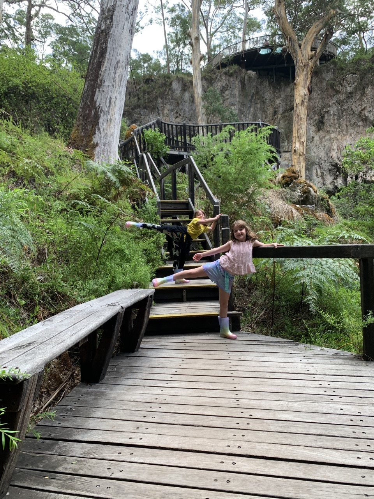
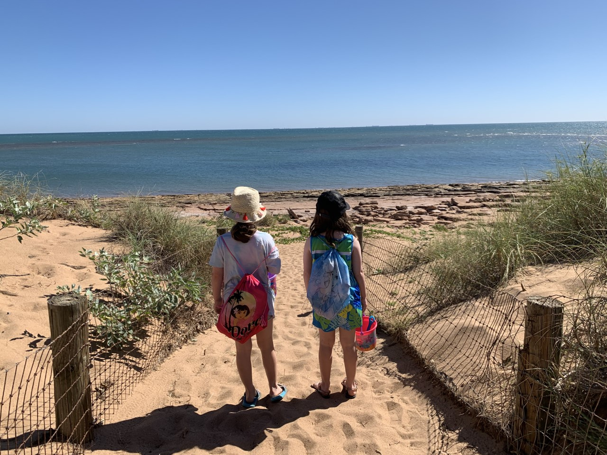
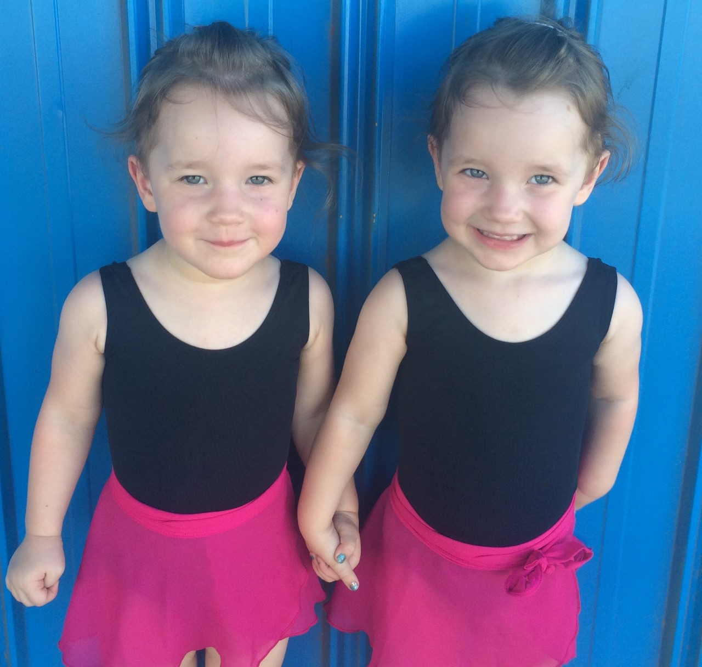
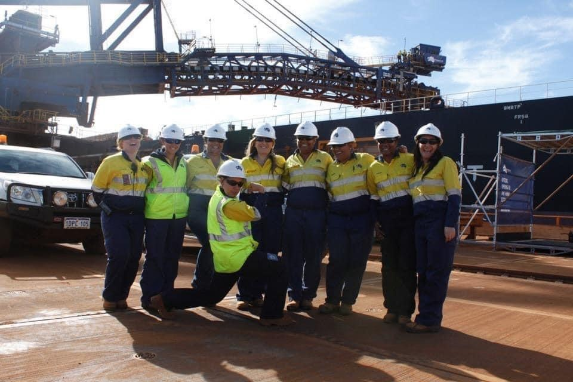

Family is important to me and I love spending time with my kids. I have 8-year-old twin girls who keep me very busy. Exploring new places, catching up with friends and snuggling on the couch.
I live in the beautiful and bustling town of Port Hedland in the Pilbara region of Western Australia. Port Hedland is known for its iron ore industry, warm weather and beaches.
Dancing is fun! Who doesnt love dancing..? I started taking lesson in Jazz and Tap when I was about 5 years old. Since then I have studied other geners including Hip Hop, Contemporary and Heels. My children also enjoy dancing and now I help teach dance on my days off.
“Teachers open the door, but you must enter by yourself” – Chinese Proverb. I strive to continuously improve myself and one way to achieve this is through education. My education includes:
In my career I have worked in a variety of industries; from retail to hospitality and now in mining. I have worked in the mining industry for over 10 years. I enjoy the challenges and have been part of many big achievements. Even within the mining industry I have worked in a range areas including projects, administration, commercial, operations and maintenance. Most recently I have moved into Rail and am loving the opportunities this has given me.
Community involvement is something I am very passionate about. Living in a regional/remote town means that things don’t get done without people from the community giving their input.
Locally I have been involved in organisation such as the Pilbara Rugby League association, Treloar Childcare, Inspire Nurture Dance Academy and Cassia P.S. P&C.
I have also supported Ronald Mcdonald House Charities. In 2014 and 2015 I was part of a team who travelled to Perth to participate in the RMHC Make-a-Meal Challenge. We cooked meals for sick kids and their family to help relieve some of the stress from managing life with a sick child. Then in 2017 I participated in the Central Park Plunge. To entice people to donate you had to commit to abseil down 220 metres from the top of the Central Park Tower on St George’s Terrace in Perth. The idea of throwing me off a building was so alluring I was able to raise over $8,000 for a worthy cause.